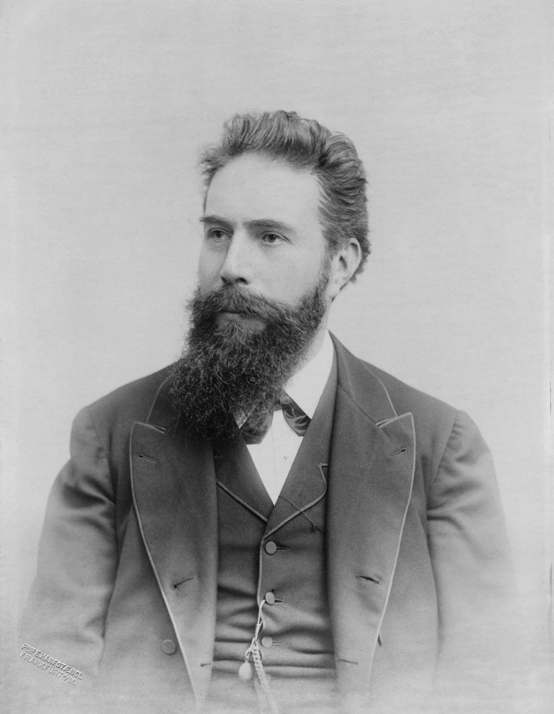

这样的工作，让你有劲
你更在意具体病例的问题，喜欢从图像、数据和工具找解释。明确的分析步骤和核对标准，比临时改变路线更合你的习惯。
工作的一天
工作例子：围绕一个病例，按既定分析顺序查看资料、比较解释并记录依据，再与团队核对哪些结论仍不确定。
可以优先了解的科室／行业方向
病理科
关注按判读步骤分析一个病例的病理材料，核对不同解释的依据。
这里按工作特点提供探索线索，结合实际体验和培养要求再判断。
值得试试的职业道路
主要了解
医学影像中的诊断分析
了解重点：了解怎样用系统方法解释具体病例，正式判读需要专业训练。
对其他材料有兴趣时
病理诊断分析
了解重点：工具与材料不同，需要补充相应专业基础。
想研究方法时
病例资料的分析方法研究
了解重点：从判读个案转向检验分析方法，需要补充研究设计。
认识一位职业榜样

把喜欢，放进真实工作里
分析病例时，如果下一步总要看过结果再定，你可能更想先有清楚的核对顺序。可以把目前的证据和没解释清的地方列出来，再和团队商量要不要继续查、接下来查什么。暂时没有把握的结论要注明。